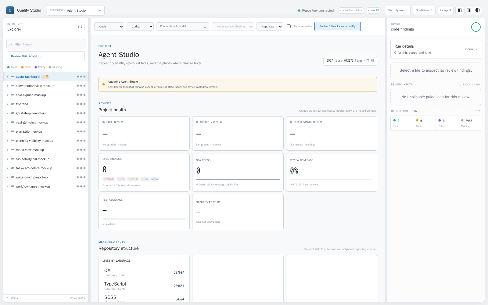
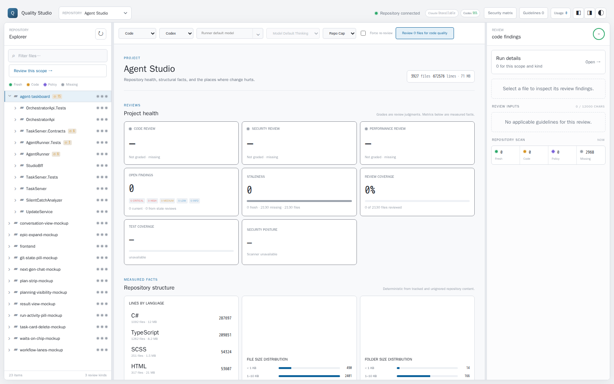
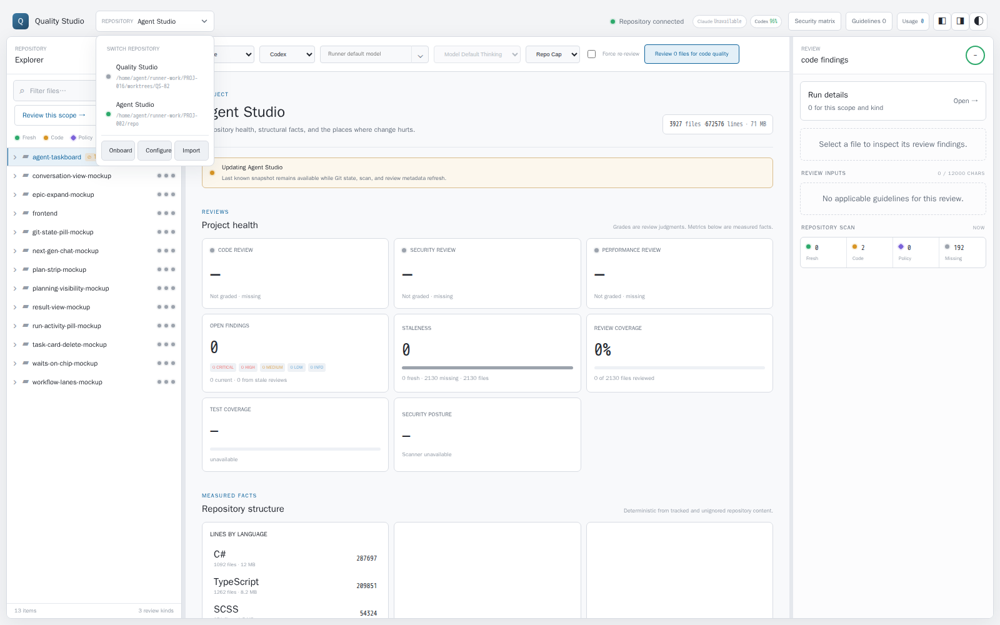
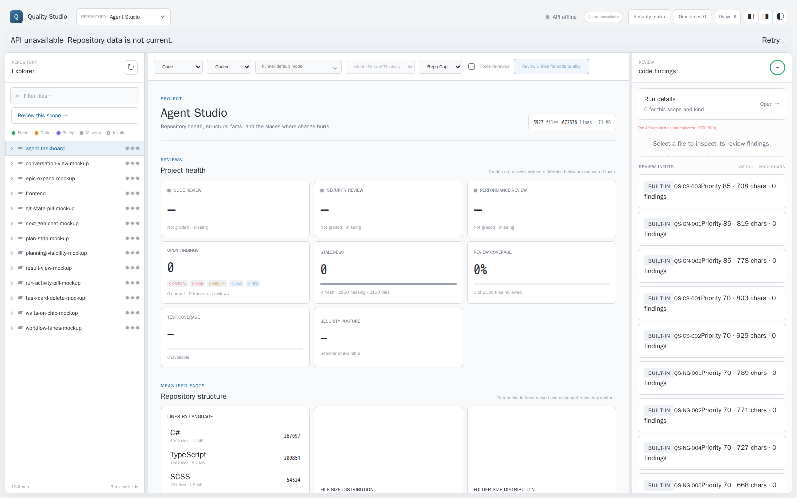

QS-59 found that a warm project switch still transferred a recursively repeated 29.1 MB tree. QS-82 delivers the next slice cleanly on top of QS-54 and QS-78: one-level tree transport, lazy expansion, snapshot-pinned child pages, complete timing, and production bundle headroom.
Status documented
Implemented 12 August 2026
Re-measured 7 September 2026
Reproduced 7 September 2026 on origin/main 6b4e7b3
Card QS-82
Integration base origin/main 6b4e7b3
Target 3,927 tracked files
Outcome. A valid persisted snapshot plus the v2 root made five measured restarts usable in 1,516.87 ms median instead of the QS-59 10,004.99 ms median (84.84% lower; the <2 s target now passes). The root response is 15,391 bytes instead of 29,119,333 bytes (99.95% smaller). Ten same-build project-plus-root samples measured 31.23 ms median / 42.45 ms p95 with v2 against 331.36 / 902.38 ms with v1. Five live Angular switches measured 19.8 / 87.0 ms and first lazy expansion measured 33.1 ms.
1. Delivery state before this card
A fresh fetch confirms that the configured remote exposes origin/main as its default/integration branch and has no origin/develop ref. The card was rebased from 59941d8 onto the current origin/maine31089c on 24 August 2026; the nine intervening commits touch only CI workflows, .gitignore, and the quality-concept/security-concept/studio-integration dossiers, so the replay was textually conflict-free. Backend orchestration, not this worker, owns pushes, merges, and worktree history.
wave 1 landed
QS-54
Successful result commit 26fd785 delivered the one-slot hierarchy cache, background prewarmer, dashboard projection cache, stale-while-revalidate browser snapshots, phase timing, tests, and real switch harness. Its behavior is patch-equivalent on main. QS-82 reuses it.
integrated here
QS-78
Result commit 3606acb delivered persisted, verified hierarchy/dashboard snapshots plus sensor-state caching; stabilization 900fea6 removed a redundant generic-repository dashboard scan. QS-82 carries both forward, resolves the tree-projection overlap, and keeps one hierarchy cache. Across five restarts the combined path was usable in 1,516.87 ms median; restored prewarm ranged from 521.25 to 877.88 ms including the new aggregate tree projection.
The prompt-referenced AGENTS.md, docs/start/README.md, contribution guide, design-principles document, and routing-policy document are absent from this integration tree and current origin/main. This card makes no model or thinking-level selection.
2. QS-59 cost blocks and selection
Rank
Measured cost
State after QS-82
#1 External model execution
18.202 s of one 18.742 s review; strict parsing was 0.1594 ms median
correctness-bound Routing and thinking level remain unchanged; phase telemetry is still a governed follow-up.
#2 Cold hierarchy + projection
8.98–11.07 s prewarm; the first request waited 6.23–8.39 s on the cache lock
QS-78/QS-82 built Verified restart snapshots avoid unchanged rebuilds and now hydrate the bounded v2 aggregate projection.
#3 Terminal notification and refresh
1,725.92 ms terminal-to-visible; about 1,411.63 ms was poll scheduling
open Push review events remain the next review-latency slice.
Large-repository transport risk
29.12 MB; 423.74 / 954.10 ms warm project-plus-tree
built · QS-82 This was QS-59's first approved implementation slice and is the focus of the re-measurement below.
3. Implementation state
Slice
State
What exists now
Lazy tree API
built · QS-82
/api/tree/v2 returns one level with aggregate facts, hasChildren, paging, conditional ETag, and a verified immutable snapshotEtag. The legacy recursive endpoint remains compatible.
Snapshot integration
built · QS-78/QS-82
QS-78 hierarchy/dashboard restoration is retained. The existing QS-54 prewarmer now fills the bounded one-slot aggregate projection; child pages pin the root snapshot and avoid another Git-state scan.
Explorer migration
built · QS-82
Children load on expansion, pages remain in the per-repository browser snapshot, server search preserves unloaded deep links, and keyboard/virtualized-row behavior remains.
Honest timing
built · QS-82
Server-Timing includes snapshot, projection, and JSON serialization. qs.tree.transport records bytes and response completion.
Bundle headroom
built · QS-82
The editor is deferred through the established Angular component boundary. Re-measured on 2026-09-07 after the rebase onto 6b4e7b3: 334.86 kB on main versus 305.97 kB here, both against the 480 kB error ceiling.
Bounded retention
built · QS-78
The dashboard cache is bounded per repository/root and invalidated with the shared repository cache state; QS-82 adds only a one-slot derived tree projection.
Review completion
not built
Server-sent review transitions and phase telemetry remain the next governed review-latency slice. Model and thinking-level routing are unchanged.
Dropped during the 24 August rebase. The pre-rebase branch also removed the ?? '' fallbacks from the two comment-draft bindings in editor.html. Angular's DOM renderer assigns bound properties directly, and HTMLInputElement.value = undefined coerces to the string "undefined" (verified in Chromium 151), so an undrafted reply box or inline composer would have rendered pre-filled with that word. The change had no performance purpose, so both bindings were restored to the origin/main form rather than replayed.
4. Before / after re-measurement
Every row below was re-run on 24 August 2026 against the rebased tree at origin/main e31089c, on the same Agent Studio commit 9af1a848e3be the QS-59 dossier used. The 12 August column is retained because that host was materially slower on the legacy v1 path; the reduction percentages, not the absolute v1 times, are the portable result.
Metric
Before
After QS-82 (24 Aug re-run)
Result
Process → usable with valid restart snapshot, n=5
QS-59: 10,004.99 ms median
1,516.87 ms median (1,335.74–2,118.64 ms)
84.84% lower; <2 s median target passes
Root payload
29,119,333 bytes
15,391 bytes
99.95% smaller
Same-build root, n=10
334.71 ms median / 1,109.25 ms p95 (legacy v1, same process)
32.54 / 44.03 ms
90.28% median reduction
Same-build project + root, n=10
331.36 ms median / 902.38 ms p95
31.23 / 42.45 ms
90.58% median reduction; 150/500 ms targets pass
Live browser switch, n=5
No equivalent real-large-repository browser series was retained by QS-59
19.8 / 87.0 ms; 5/5 pass
Both 250/500 ms targets pass
First lazy expansion
Not applicable; descendants were eager
33.1 ms
100 ms target passes
Cached toggles, n=6
QS-59 fixture: 4.9–25.1 ms
6.8 / 14.1 ms
50 ms contract passes
Cold first start, no persisted snapshot
QS-59: 10,004.99 ms median
7,338.20 ms (9,087.39 ms prewarm)
Unchanged by design; the first scan of an unseen repository is still the cost QS-78/QS-82 amortize across restarts.
Sensor descriptor request
Probed every sensor per request
44.38 ms first / 23.43 ms warm
Sensor initialization is 0.00 ms after the cached state hit
Initial production bundle
478.30 kB
438.02 kB (438,016 bytes)
40.28 kB / 8.42% smaller; ≤450 kB target passes
Subject: Agent Studio 9af1a848e3be, 3,927 tracked files; .NET 10.0.301; Node 22.23.1; Chromium 151.0.7922.34 (the 12 August run used Chromium 149.0.7827.55). The v1/v2 backend comparison uses one warmed API process, so both arms share JIT and OS cache state. The browser comparison runs the real API plus the real Angular app. Raw JSON for every row is in results/ beside this page.
5. App evidence
All four screenshots come from the 24 August re-run driving the real API and the real Angular app against the 3,927-file repository.

Before interaction. The app is usable with only the 15,391-byte root page loaded; the explorer footer reads 13 items and the selected solution is still collapsed.

After interaction. The same live app shows the selected solution's ten children — 23 items — after a 33.1 ms snapshot-pinned lazy expansion.

Switcher. Root paths wrap instead of truncating. Re-captured 7 September 2026 after the rebase: the three repository actions share one token-spaced row and main's API-access action spans the row below them.

API down. Losing the API raises an explicit notice instead of silently presenting stale data as live; Retry recovered the session in the same run. Re-captured 7 September 2026 from the rebased build.
6. Verification and evidence
Re-run in full on 24 August 2026 on the rebased tree. Counts below are what the run actually printed.
Token Economy catalog snapshot check: valid.
Release solution build: zero warnings, zero errors.
Core .NET tests: 155 passed, 1 skipped (156 total); the skip is the explicitly gated live-provider test.
API tests: 52 passed, including the 5,000-file projection gate and the two new v2 transport tests.
Security scan: pass — 0 new, 0 accepted, 0 blocking, 0 warnings (gitleaks 8.24.2); 370 files at implementation commit b36bfe3 and 372 at the delivered head, the two added files being this section's reproduction JSON and contract harness.
Angular tests: 44 passed in Chrome Headless 152 with the repository no-sandbox launcher.
Production Angular build: passed at 438,016 bytes initial; the pre-existing style and CommonJS warnings remain.
Real path: all five large switches, the first lazy expansion, all six cached toggles, and all eleven transition marks pass their budgets, and the restored-startup median now clears the 2 s target.
6.1 Independent reproduction on the committed tree
The whole gate and the transport benchmark were re-run a second time, 50 minutes after the first, against the committed tree at b36bfe3 (productWorktreeDirty: false) and the same target commit 9af1a848e3be. The host was heavily shared at the time (load average 17.7), so absolute latencies are higher in both arms; the deterministic sizes and the reduction ratios reproduce exactly.
Metric
First run (dirty worktree)
Reproduction (committed, loaded host)
Agreement
v1 root payload
29,119,333 bytes
29,119,333 bytes
identical
v2 root payload
15,391 bytes
15,391 bytes
identical
Root payload reduction
99.95%
99.95%
identical
Root median latency reduction
90.28% (334.71 → 32.54 ms)
91.51% (526.45 → 44.69 ms)
reproduces
Project + root median reduction
90.58% (331.36 → 31.23 ms)
91.91% (533.49 → 43.16 ms)
reproduces
Cached expansion median
5.12 ms
5.28 ms
reproduces
Conditional root request
304
304
identical
A separate 13-point contract check drove the Release build end to end and confirmed the behavioural claims rather than only the timings: one-level shape with empty children arrays, hasChildren, Server-Timing phases, cursor paging without repeats, a child page reusing the pinned root snapshotEtag, 304 on If-None-Match, 404 for an unknown parentId, rejection of a malformed cursor, and server-side search. All 13 passed. The harness and its log ship as verify-tree-v2.mjs and tree-v2-contract-checks.log.
Environment caveat.frontend/tests/run-tests.mjs probes only system Chrome/Edge install paths, so on a container whose only browsers live in the Playwright/Puppeteer caches it exits with "Unable to locate a Chrome-compatible browser binary" until CHROME_BIN is set explicitly. That behaviour predates this card and was not changed here, but it is the reason a bare npm test can appear to fail in CI-like sandboxes.
The 12 August dossier claimed "156 passed" for the core suite and "53 passed" for the API suite. The re-run reports 155 passed + 1 skipped and 52 passed. The core figure was a total-vs-passed miscount; the API figure is corrected here rather than carried forward.
Raw artifacts live in results/ next to this page: agent-studio-switch-cache.json, tree-transport-benchmark.json, lazy-tree-browser.json, agent-studio-browser-switch.json, and the light/dark before/after plus switcher and API-down screenshots. The same set, with report.md, deliverables.md, and status.md, is shipped to the run's results directory.
7. Reconciliation with QS-86 static analysis (28 August 2026)
origin/main advanced past this card's 24 August delivery point with f083dd1 (QS-86, deterministic compiler/lint evidence before model review). The two changesets touch exactly one shared file, src/QualityStudio.Api/Program.cs: QS-86 registers DotNetBuildSensor and adds it to the sensor list; QS-82 registers the snapshot-store/tree-projection services and adds the /api/tree/v2 routes and handlers. The two edits sit in disjoint regions of the file (service registrations 30 lines apart, handlers hundreds of lines apart) and combine without semantic conflict — both feature sets are present and independently exercised by the gate below. Backend orchestration, not this worker, owns pushes, merges, and worktree history; this section documents that the reconciled tree is gate-clean, not that it has been merged to origin/main.
Token Economy catalog snapshot check: valid.
Release solution build: zero warnings, zero errors.
Core .NET tests: 159 passed, 1 skipped (160 total); QS-86 added 4 tests over the 24 August baseline of 155/1. Two isolated re-runs on this shared host (load average 15–24) each surfaced one different host-timing-budget failure (a token-cap duration assertion, then a 150 ms dashboard-projection budget); a clean, unloaded re-run and a second full-solution re-run both passed all 212 tests, matching this memory's prior finding that this host produces one-off timing flakes rather than real regressions.
API tests: 53 passed (0 failed on the clean re-runs), including the 5,000-file projection gate, the two v2 transport tests, and QS-86's check-then-model ordering test.
Security scan: pass — 378 files, 0 new, 0 accepted, 0 blocking, 0 warnings (gitleaks 8.24.2); up from 372 at the 24 August delivered head because QS-86 added its own eslint config/docs files in the interim.
Angular tests: 44 passed in Chrome Headless 152 with the repository no-sandbox launcher.
Tree-v2 contract harness (scripts/verify-tree-v2-contract.mjs): 13/13 checks passed, 99.60% v1→v2 root-payload reduction against this repository's own tree.
Metric
24 Aug delivered head
28 Aug reconciled tree
Agreement
v1 root payload
29,119,333 bytes
29,119,333 bytes
identical
v2 root payload
15,391 bytes
15,391 bytes
identical
Root payload reduction
99.95%
99.95%
identical
Same-build root median reduction
90.28%
90.86% (262.53 → 23.99 ms)
reproduces
Warm switch median reduction
90.58%
89.90% (259.02 → 26.16 ms)
reproduces
Re-measured against the same Agent Studio target (9af1a848e3be, 3,927 tracked files) with scripts/measure-tree-transport.mjs on a shared host (load average 15–24 during this run), so absolute latencies are higher across the board than the 24 August run on both arms; the reduction ratios, not the absolute times, are the portable claim, and they reproduce within 1.5 points. Raw JSON is not retained beyond this run's job results directory (host is shared and ephemeral per run).
8. Final current-main re-gate (1 September 2026)
The previously reviewed QS-82 delivery 564922a5 was replayed onto current origin/main 7d3abdf as 320b7a3. The only replay conflict was the shared token block in frontend/src/styles.css; the resolution retains both main's modal tokens and QS-82's repository-menu width token. No feature code was reworked.
Token Economy catalog snapshot check: valid.
Release solution build: zero warnings, zero errors.
Portable .NET tests: 175 core passed, 1 explicitly gated live-provider test skipped; 62 API tests passed (238 total outcomes, zero failures).
NuGet vulnerability checks: solution and code-graph spike both report no vulnerable packages.
Angular production build: passed at 438.13 kB initial, below the 480 kB error ceiling; the mainline template, style-budget warning threshold, and prismjs CommonJS warnings remain non-blocking.
Angular tests: 58/58 passed in Chrome Headless 152 using the container's cached browser through CHROME_BIN.
npm production and full dependency audits: zero vulnerabilities.
Tree-v2 live contract harness: 13/13 passed; this checkout measured 1,653,398-byte v1 versus 5,331-byte v2 roots, a 99.68% reduction.
The 24 August before/after series remains the controlled QS-59 comparison and is not replaced by this final integration gate. The 1 September contract run is a functional current-tree receipt; its smaller repository is not used to revise the large-repository performance claims.
9. Rebase onto current main and re-gate (7 September 2026)
The delivery tip 2390474 was rebased onto origin/main 6b4e7b3. Main had advanced substantially in the interim — the frontend API service was split along its domains, the project-dashboard cache became a bounded LRU, the hierarchy cache gained a one-second Git-fingerprint TTL, and the .NET hierarchy now derives function units below file nodes. Eleven files conflicted. Every conflict was resolved by keeping main's newer structure and re-expressing the QS-82 change on top of it; no QS-82 feature was dropped and no feature was reworked.
Conflict
Resolution
quality-api.ts (service split)
The lazy transport was ported onto main's facade. The root now loads over /api/tree/v2 with main's conditional If-None-Match revalidation on the first page, falling back to the recursive route on a 404. Path-scoped loads keep the recursive route.
app.ts (nodeAt/allNodes)
Main's cached path lookup is kept; nodesByPath now also covers server search hits, which is what QS-82 needed the extra flattening for.
explorer.ts (debounced filter)
Main's debounce is kept and now drives the bounded server-side search, because a lazy tree cannot answer a filter from the loaded levels alone.
app.html / app.css
QS-82's three-column repository menu is kept together with main's API-access action, which spans the row. .secondary-button, which the QS-82 markup referenced but nothing defined, is now a token-based shared class in styles.css.
ProjectDashboard.cs
Main's bounded LRU replaces QS-82's one-slot-per-repository cache; QS-82's Seed is re-expressed against it so the prewarmer still avoids a rebuild.
RepositoryHierarchyCache.cs
QS-82's public MeasureState now reads main's TTL-cached Git fingerprint instead of running Git again, and the fingerprint carries HEAD for the diagnostic field.
Program.cs
The sensors endpoint keeps QS-82's per-repository availability cache; the surrounding QS-86 registrations were untouched.
Three test assertions were corrected because main changed the ground truth underneath them, not because behaviour regressed: the tree-v2 search test now asserts that a file states hasChildren/childCount without shipping its (newly derived) function children; the sensor-availability test constructs its hierarchy cache with a zero fingerprint TTL so it measures invalidation rather than main's deliberate one-second reuse window; and the explorer filter tests now flush the server search. One genuine defect surfaced and was fixed: with a server-side filter, Escape no longer cleared a filter that had matched nothing, because the key handler returned early on an empty row set.
Release solution build: zero warnings, zero errors.
dotnet format --verify-no-changes: clean (one import-ordering fix in TreeTransport.cs).
.NET tests: 150 API + 397 core passed, 2 skipped, zero failures — repeated three times consecutively. A single first-run failure of the 150 ms 5,000-file dashboard budget did not recur in any of the three repeats and is the known host-timing flake, not a regression in this diff.
Angular tests: 144/144 passed in Chrome Headless 153.
npm run lint: clean. Production ng build: clean apart from the pre-existing prismjs CommonJS warnings.
Tree-v2 live contract harness: 13/13 passed against this repository — v1 root 2,868,549 bytes versus v2 root 2,256 bytes, 99.92% smaller.
Metric
origin/main 6b4e7b3
Rebased QS-82
Change
Root payload (this repository)
2,868,549 bytes
2,255 bytes
-99.92%
Root request, 10 warm samples
79.13 ms median / 93.85 ms p95
3.20 ms / 3.55 ms
-95.96% median
Cached child page (one level of 5)
n/a — descendants were eager
4.73 ms
pinned to the root snapshot
Repeat conditional root request
—
304 in 9.95 ms
no payload
Initial production bundle
334.86 kB raw / 92.49 kB transfer
305.97 kB / 86.04 kB
-28.89 kB (-8.63%)
The live browser harness was re-run against the same 3,927-file Agent Studio target (9af1a848e3be) from the rebased build in Chromium 153.0.8010.12; the raw series is results/lazy-tree-browser.json.
Browser measurement
Budget
7 September 2026 result
Large-repository switch to usable, 5 samples
< 500 ms
40.7 ms median / 47.0 ms p95 (34.9–47.0 ms)
First lazy expansion, 10 children fetched
< 100 ms
23.3 ms
Cached expand/collapse, 6 samples
< 50 ms
2.0 ms median / 11.4 ms p95
Repository transitions visible, 5 samples
< 100 ms
11.4–17.3 ms, all inside budget
The switcher run from the same build restored the last repository across a reload, rendered both full root paths, and raised the explicit API unavailable notice whose Retry recovered the session — the two screenshots in section 5 are that run's captures.
This repository is much smaller than the 3,927-file Agent Studio target of the controlled 24 August series, so only the ratios carry over; the absolute large-repository numbers in section 4 are not revised by this run. Backend orchestration owns pushes and merges; this section records that the rebased tree is gate-clean, not that it has been merged.
10. Recovery re-gate and a harness defect this round found (7 September 2026)
The fenced delivery 2390474 was recovered and confirmed to already sit on current origin/main 6b4e7b3, so this round produced no new conflicts. Every job of .github/workflows/build.yml was then replayed locally on the Linux host, and one of them failed for a reason that was genuinely in this diff.
Defect found and fixed.npm run perf failed at the repository-dashboard step. The cause was not the dashboard: frontend/tests/perf.mjs stubs the API so it can measure a fixed worst-case fixture, but its hierarchy stub only matched the recursive /api/tree route. Once the shell moved to /api/tree/v2 and /api/tree/v2/search, nothing matched, the fixture went dead, and the harness silently measured whatever repository the dev stack served — where the first row is a project, not the repository, so no health card ever appeared. The harness now answers the level and search routes from the same fixture, one level at a time and shallow, the way the server does, and addresses the repository node by id again instead of by position. The fixture is measured once more, and the run now also exercises the lazy expansion this card introduced.
Browser budget (fixture)
Budget
Result
qs.project.first-interactive
< 150 ms
35.8 ms
qs.tree.expand-loaded, first lazy level
< 100 ms
30.4 ms
qs.tree.toggle, cached
< 50 ms
19.8 ms and 17.3 ms
qs.file.first-content, 6,000-line payload
< 150 ms
67.5 ms
qs.review.aspect-switch
< 50 ms
7.5 ms
Repository dashboard visible
< 150 ms
59.6 ms
The live-API half of the same gate (project-switch-perf.mjs) is where this card's own win shows on this host: qs.project.first-interactive for the default repository measures 73.3 ms here against 222.6 ms on a pristine origin/main 6b4e7b3 checkout, which misses its own 150 ms budget. Repository switches to usable measure 25.5–46.9 ms against a 500 ms budget.
dotnet restore --locked-mode, dotnet format --verify-no-changes, Release build: clean, zero warnings.
Gate test step (--filter "Category!=MachineBound") with coverage: 149 API + 396 core passed, 2 skipped, zero failures.
Coverage against the baselines: core 82.28% (floor 77.07%), API 47.73% (floor 41.26%), frontend 69.86% (floor 58.82%).
Frontend: lint clean, production build clean apart from the pre-existing prismjs CommonJS warnings, 144/144 Angular tests in Chrome Headless 153, production audit reports no vulnerabilities.
Browser performance budgets: both harnesses pass.
Correction to section 9. That section reported the 150 ms 5,000-file dashboard budget as a first-run flake that did not recur. On this host it does recur: it fails in every full-solution run and passes in every isolated run, because the two test assemblies run concurrently and the assertion is on wall-clock time. It fails the same way on a pristine origin/main 6b4e7b3 checkout, and by a wider margin — 278 ms there against 175–316 ms here — so it is not this diff. The test carries [Trait("Category", "MachineBound")] and the gate excludes that category by design, which is why the gate step above is green. It is left untouched: it belongs to main, and re-tuning a host-sensitive budget from inside this card would hide whatever it is meant to catch.
The delivery history was also given real commit subjects in place of the runner's wip … salvage before teardown placeholders. The trees are identical to the reviewed delivery; only the messages changed.